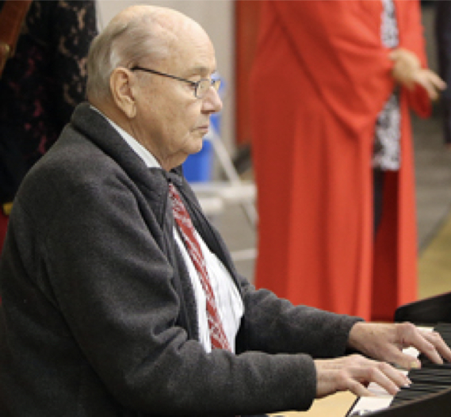
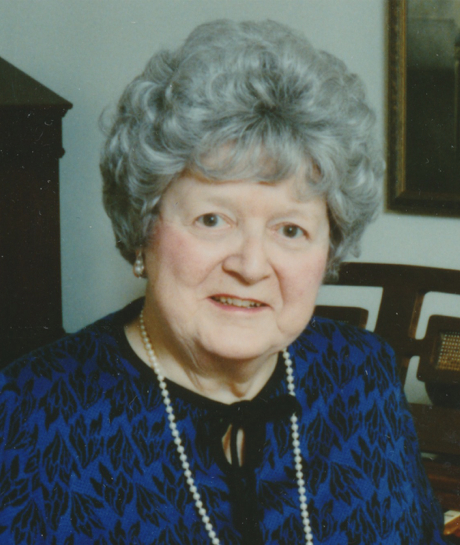

-1-MasterItem.svg)
Stories of Westminster United Church & its People / Page
151
Our organist from the time of Herb’s death (mid 1955) was one
of his students, Allen Borbridge, who was both organist and
choirmaster for two years. Barry Anderson then took on the job
of organist and Glen Harrison became our Choir Director on
September 15, 1957. Barry was a student of both Herb Sadler
and Hugh Bancroft. He was not only a fine organist, he had
considerable skill as a sight reader and an awesome ability to
transpose music on the spot. He was with us till 1966 when he
moved to Knox Church as their organist.
For further comments on Barry’s sterling service to Winnipeg
music, see this
University of Winnipeg profile
and this
Winnipeg Free Press article
.
Following Barry, Myra Davidson performed as
pro tem
organist until Don Menzies
was able to assume his appointment as our new full time organist.
Myra’s background is an interesting one. Starting with early, early history, Myra
could trace her family line right back to the 16th century when her ancestor,
Thomas Tallis, served as organist from 1505 to 1585 for Henry VIII, Edward VI,
Mary and Elizabeth I. Tallis’s fame lies not only in his work in the Chapel Royal
but also as a stellar member of a long line of English composers who earned
their livings in the great Cathedrals of England.
Myra’s life was music. Her mother, raised in England and emigrated to Canada,
was an accomplished pianist who supported and encouraged her daughter to
the keyboard. During the Depression when Myra was in her teens she helped
support her family by giving piano lessons. In the early 1940s she entertained
troops training in
Manitoba. (Mother played the piano, Myra sang and danced as part of a group of
young entertainers.)
She moved from the piano to the pipe organ after her husband, Harold died. She
took lessons from
Barry Anderson for ten years and played at services in Westminster and other
Winnipeg churches.
Table
of Contents
Music at Westminster

